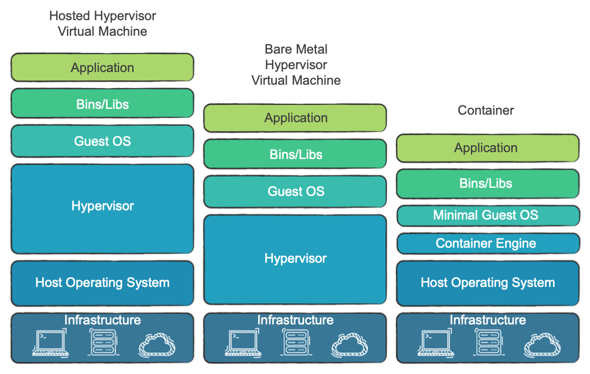

Заверните мне, пожалуйста
Заверните мне, пожалуйста
Используем Docker в обычной жизни
Что будет в докладе
- Зачем нам нужны контейнеры
- Как работает Docker
- Делаем приложение с Docker
- Когда контейнеров много
- Безопасность
Контейнеры vs виртуальные машины
Виртуальные машины - много операционных систем на одном хост-сервере, управляемых гипервизором (Microsoft Hyper-V, VMware).
Контейнеры vs виртуальные машины
Контейнеры - одна ОС(с системой OpenVZ, Systemd-nspawn, LXC) и много изолированных сред для запуска приложений

LXC
Одна из самый популярных систем - LXC(Linux Containers)
Основывается на механизмах:

Эра контейнеров
- Один процесс — один контейнер.
- Все нужные процессу зависимости доставляем в его контейнер. Это требует распиливать монолиты на микросервисы.
- Чем меньше образ, тем лучше — меньше возможных уязвимостей, быстрее раскатывается и так далее.
- Инстансы становятся эфемерными.
Как работает Docker
- Docker Daemon — то самое Container Engine; запускает контейнеры.
- Docker CLI — утилита по управлению Docker.
- Dockerfile — инструкция для сборки образа.
- Image — образ, из которого раскатывается контейнер.
- Container.
- Docker registry — хранилище образов.
Основные команды
- docker ps — показать контейнеры на Docker-хосте.
- docker images — показать образы, скачанные локально.
- docker search [name] — поиск образа в registry.
- docker pull [name] — скачать образ из registry на машину.
- docker build [/path/to/dir] — собрать образ.
- docker run [name] — запуск контейнер.
- docker rm [name] — удалить контейнер.
- docker logs [name] — логи контейнера
- docker start/stop/restart [name] — работа с контейнером
docker run -d --name myredis redis
Продвинутые команды
Можно использовать переменные как в shell
Так зачем он нужен?
- Супер-песочница. Собрали, поиграли, выкинули
- Удобный способ доставки приложений на сервера. Все зависимости в комплекте
- Нет кофликтов версии в пределах хост-машины
- Удобный способ обновления - просто обнови контейнер
- Экономный - можно квотировать потребление ресурсов каждым контейнером
Соберем простое приложение в Docker...
- Инициализация проекта, добавление зависимостей, пишем код
- Добавляем Dockerfile
docker build -t sample_project .docker run -d -p 8090:3000 sample_project- Пробрасывает папку внутрь
docker run -d -p 8090:3000 -v "$(pwd)"/:/usr/src/app sample_project
- Вуаля!
Урощаем работу с docker-compose
- Упрощает работу с контейнерами
- Упрощает запуск нескольких микросервисов
- Для запуска сборки фронт-бек надо знать одну команду*
docker-compose up --build
- Вуаля!
Настройка ENV окружения
Можно передавать через
ARG/ENV внутри Dockerfile- ключ
-e: docker run -e REDIS_NAMESPACE='staging'
- ключ
--env-file: docker run --env-file ./.env
- перечисление в Docker-compose
- ссылка на файл в Docker-compose

Управление даными в контейнере
- временное хранение в слое контейнера
-
постояное хранение
- простое монтирование папки
- тома с данными
- тома-контейнеры
Пример приложения с Docker-compose
Или как можно поднять весь сервис (фронтенд/бекенд/бд) одной командой
Оптимизация образов
- минимальный базовый образ (обычно alpine, но есть тонкости)
- группировка команд команды* && и \
- добавление .dockerignore
- использование multi-stage сборок
- исключение ненужных библиотек и dev-зависимостей
- использование родительскиз образов
- схлопывание слоев (образ из контейнера или использовать docker-squash)
* каждая инструкция в Dockerfile создает новый слой
Multi-stage сборка
FROM node:alpine as build
WORKDIR /app
COPY package*.json ./
RUN npm install
COPY . .
RUN npm run build
FROM nginx
EXPOSE 80
COPY --from=build /app/build /usr/share/nginx/html
Репозитории образов
Можно не только скачивать базовые образы, но и хранить свои в Docker Hub(своем registry)
docker login --username=name --email=m@c.com
docker push your-hub-username/image-name
Другие способы распространения
docker save [image-id] > image.tar
или
docker export [container-id] > image.tar
и
docker load --input image.tar
Тестирование с Docker
Плюсы, как и при разработке:
- изолированность
- стабильность
- переносимость
- удобный CI
Деплой с Docker
docker login -e username@mail.com -u username -p userpass
docker push username/your-docker-app:0.1.0.
docker run -d --rm -p 80:3000 username/your-docker-app:0.1.0.
Логирование
docker logs container
docker logs container --since 2018-01-30T11:00
docker logs container --tail N
docker logs container --follow
docker logs container | grep -i error
docker inspect --format='{{.LogPath}}' container
docker stats couchbase
Драйвер логов
По умолчанию уничтожение контейнера приводит к удалению логов. Если нужны логи, укажите опцию --log-driver:
docker run --log-driver=journald
journalctl -u docker CONTAINER_NAME=mycontainer_name
journalctl -u docker CONTAINER_TAG=mytag
Системы оркестрации контейнеров
- Docker Swarm
- Kubernetes
- Apache Mesos
- Fleet
Docker Swarm
Docker Swarm Cluster состоит из нод, которые делят на два типа:
- Управляющая нода (Manager)
- Рабочая нода (Worker)

Kubernetes
Структура похожа на Swarm, но сложнее внутри
- Умеет работать не только с Docker контейнерами (+ rkt, CRI-O)
- Автомасштабирование ресурсов под нагрузку
- выше порог вхождения
Безопасность
Встроенные средства:
- Docker-контейнеры минимальны
- Docker-контейнеры выполняют специфическую задачу
- Docker-контейнеры изолированы
- Docker-контейнеры воспроизводимы
и ее проблемы
- Безопасность Docker-хоста и ядра
- Выход за пределы Docker-контейнера
- Подлинность образов Docker
- Злоупотребление ресурсами
- Учетные данные и секреты Docker
- Мониторинг безопасности Docker во время выполнения